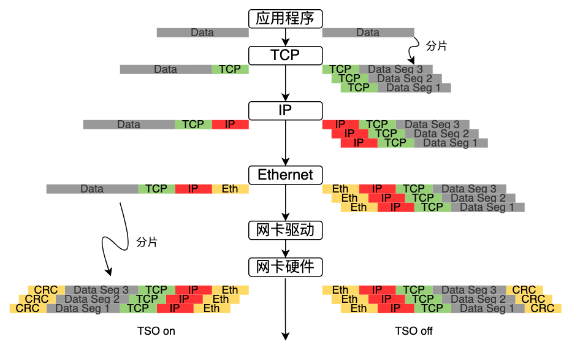
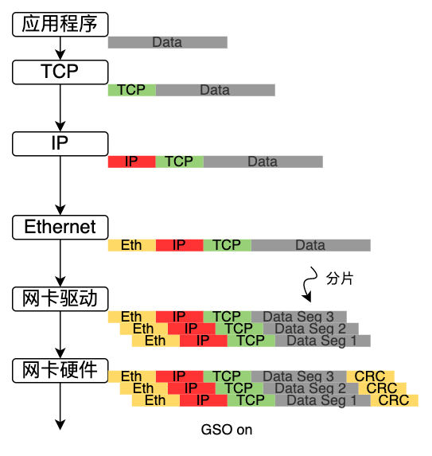
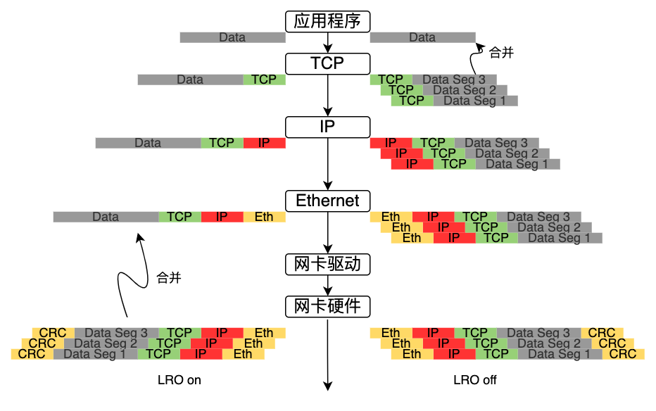
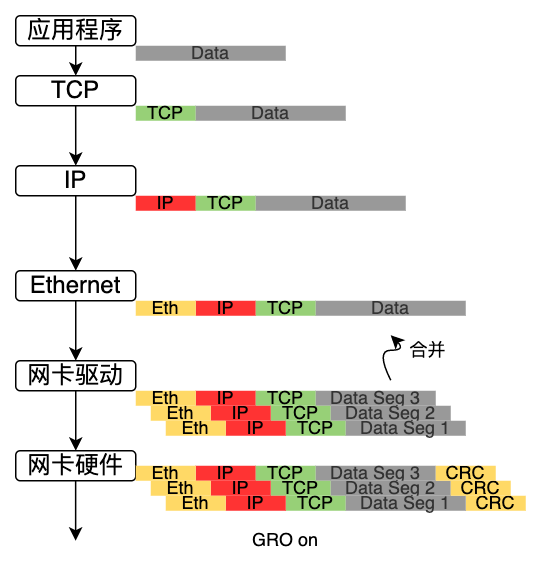

聊聊网络卸载技术
0. 网络加速的起源
传统数据中心基于冯诺依曼架构，所有的数据都需要送到CPU进行处理。随着数据中心的高速发展，摩尔定律逐渐失效，CPU的增长速度无法满足数据的爆发式增长，CPU的处理效率已经不能满足数据处理的要求。
以24和计算型服务器为例，网络功能占用6个核心，虚拟化功能占用1个核心，可用于VM的核心数量为17个，可用的CPU资源比例为70%。当网卡升级到100G时，CPU资源基本被占用，算力资源基本不可用。
计算架构从以CPU为中心的Onload模式向以数据为中心的Offload模式转变。以数据为中心的计算架构成为趋势。以数据为中心的模式即数据在哪里，计算就在哪里。当数据在存储资源上，对数据的计算就在存储上进行；当数据在网络中流动，对数据的处理就在网络上进行。
通过架构的演进，典型的通信延时可以从30-40微妙，缩短为3-4微妙。网络计算和智能网卡/DPU成为数据中心计算架构的核心。
1. 什么是网络硬件卸载
在传统服务器上，网卡收到报文后需要经过内核处理，然后交给应用层。随着流量的增大，内核需要处理大量的报文，占用了过多的CPU资源。为此我们希望将协议报文的处理放在网卡上去做，让网卡做某些前期工作，以减轻内核的压力。
常见的卸载包括
- Vlan
- checksum
- tunnel
- TSO/GSO/LRO/GRO
2-1 VLAN硬件卸载
如果由软件完成VLAN_TAG的插入将会给CPU带来额外的符合，涉及一次额外的内存拷贝（报文内容复制），最坏场景下，这可能是上百周期的开销。大多数网卡硬件提供了VLAN卸载功能。
接受侧对VLAN进行包过滤
网卡最典型的卸载功能之一就是在接收侧对VLAN进行包过滤，在DPDK中app/testpmd提供了测试命令与实现代码。
| testpmd命令 | 功能解释 |
|---|---|
| vlan set filter(on|off) (port_id) | 打开或关闭端口的VLAN过滤功能。不匹配VLAN过滤表的VLAN包会被丢弃 |
| rx_vlan set tpid (value) (port_id) | 设置VLAN过滤的TPID选项，支持多个TPID |
| Rx_vlan add (vlan_id|all) (port_id) | 添加过滤的VLAN ID，可以添加多个VLAN，最大支持VLAN的表项由网卡数据手册限定 |
| Rx_vlan rm (vlan_id|all) (port_id) | 删除单个或者所有VLAN过滤表项 |
| Rx_vlan add (vlan_id) port (port_id) vf (vf_mask) | 添加port/vf设置VLAN过滤表项 |
| Rx_vlan rm (vlan_id) port (port_id) vf (vf_mask) | 删除port/vf设置VLAN过滤表项 |
发包时VLAN TAG的插入
在DPDK中，在调用发送函数前，必须提前设置mbuf数据结构，设置PKT_TX_VLAN_PKT位，同时将具体的TAG信息写入vlan_tci字段。
多层VLAN
现在网卡硬件大多支持两层VLAN TAG进行卸载，如VLAN TAG的剥离和插入。
2-2 IP/TCP/UDP/SCTP checksum硬件卸载功能
checksum在收发两个方向都需要支持，操作并不一致。
在接收方向上，主要是检测。通过设置端口配置，强制对所有到达的数据报文进行检测，即判断哪些包的checksum是错误的，对于出错的包，可以选择将其丢弃，并在统计数据中体现出来。
在DPDK中，每个数据包都有直接关联的rte_mbuf，网卡自动检测进来的包，如果发现checksum错误，就会设置错误标志。软件驱动会查询硬件标志状态，通过mbuf中的ol_flags字段来通知上层应用。
2-3 tunnel硬件卸载
目前DPDK仅支持对VxLAN和NVGRE的流进行重定向：基于VxLAN和NVGRE的特定信息，TNI或VNI，以及内层的MAC或IP地址进行重定向。
在dpdk/testpmd中，可以使用相关的命令行来使用VxLAN和NVGRE的数据流重定向功能，如下所示：
flow_director_filter X mode Tunnel add/del/update mac XX:XX:XX:XX:XX:XX vlan XXXX tunnel NVGRE/VxLAN tunnel-id XXXX flexbytes (X,X) fwd/drop queue X fd_id X
2-4 TSO硬件卸载
TSO（TCP Segment Offload）是TCP分片功能的硬件卸载，显然这是发送报文方向。
网卡硬件提供的TCP分片卸载功能可以大幅减轻软件对TCP分片的负担。

通过上图的对比可以发现，TSO关闭时由应用程序（即CPU）负责分片；一旦TSO打开，内核协议栈可以不关心数据大小，由网卡硬件进行分片，从而减轻了CPU的负载。
GSO通用分片卸载
GSO（Generic Segmentation Offload）是延缓分片技术，比TSO更同样，原因在于它不需要网卡硬件支持就可以进行分片。
其过程是：首先查询网卡是否支持TSO，如果硬件支持TSO则使用网卡硬件的分片功能进行分片，具体流程如上一致；如果网卡不支持TSO功能，则将分片的执行延缓到将数据推送到网卡的前一刻执行，如下图所示。
网卡关闭TSO或者网卡不支持TSO，GSO on状态下数据包的发送过程：

TSO和GSO对应数据发送过程，数据接收过程的是LRO和GRO。
LRO/GRO接收卸载
LRO（Large Receive Offload）是将网卡收到的多个数据包合并成一个大数据包，再传递给网络协议栈处理的技术。这样可以提升系统接收报文的能力，减轻CPU负载。
LRO开启和关闭状态下数据包的接收过程如下：

GRO（Generic Receive Offload）是LRO的软件实现，只是GRO的合并条件更加严格和灵活。
GRO on状态下数据包的接收过程：

参考资料
- 原文作者：Kevin
- 原文链接：http://www.subond.com/post/2023-06-21_offload/
- 版权声明：本作品采用知识共享署名-非商业性使用-禁止演绎 4.0 国际许可协议进行许可，非商业转载请注明出处（作者，原文链接），商业转载请联系作者获得授权。